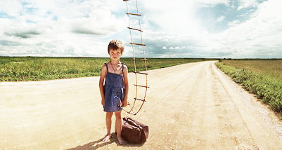

Кто мы и чем занимаемся.
Наше предназначение - помочь Стартаперу найти инвестиции в свой проект, а банкам и инвесторам - принять активное участие в развитии инновационных разработок, получать дивиденды от вложенных денежных средств.
Аудитория проекта - успешные предприниматели и опытные банкиры, креативные pr-директора и отличные руководители известных компаний.
Нас благодарят за: - экономию времени (временные затраты на поиск инвестора (партнера) сокращаются на десятки часов еженедельно); - эмпатию (вы не платите агентам, посредникам за поиск нужного вам человека) мы знаем, насколько сложен деловой мир; - существование (Вот оно – главное счастье человека: быть нужным.); - self-Pr (каждый человек имеет право быть услышанным); - чашечку ароматного чая (мы всегда рады пригласить Вас в наш офис) ;)
Платформа, ориентированная на привлечение финансирования в креативные проекты через краудфандинг
Тысячи людей готовы поддержать авторские начинания в таких областях, как музыка, фильмы, игры, искусство, новые технологии, промышленный дизайн и прочих. Множество успешных проектов являются ярким подтверждением этого.
Совершенно новый подход к реализации Вашего творческого потенциала и к привлечению финансирования через краудфандинг
Нам интересны оригинальные, новаторские, современные идеи, которые могут быть полезны для общества. Поэтому мы предоставляем людям возможность поддержать интересые им проекты, а взамен получить уникальные продукты, бонусы или необычный опыт.
Только полное финансирование проектов
Почему? Таким образом исключаются возможные негативные последствия: очевидно, что недостаток средств может привести к некачественной реализации проекта. Если проект не привлекает требующуюся сумму денег, то все собранные средства моментально возвращаются спонсорам.
Индивидуальность и социальная активность
Платформа создана для самых разных проектов: больших и малых, серьезных и не очень, традиционных и экспериментальных. Любой может реализовать свою идею, будь то запись музыкального альбома, съемка фильма или создание нового прибора. Нужны только фантазия, желание и немного таланта.